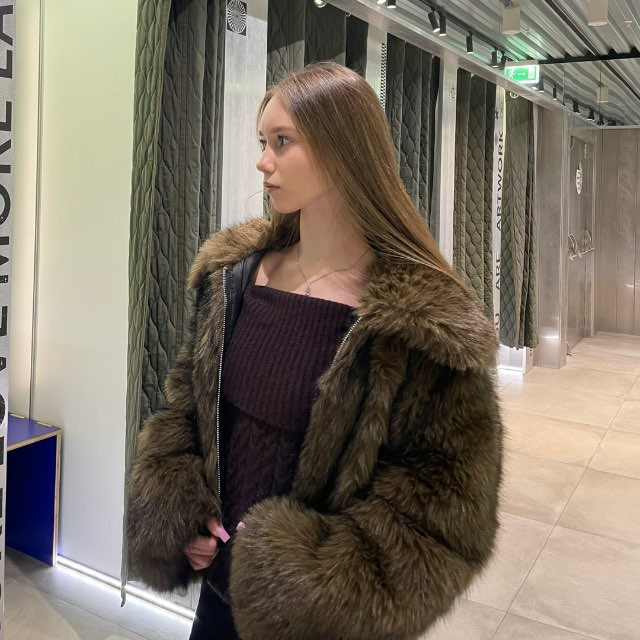
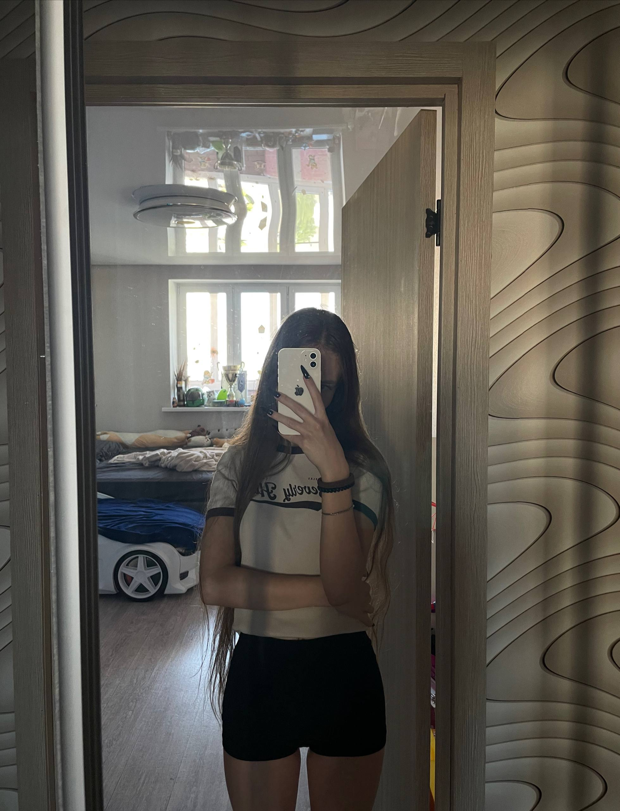
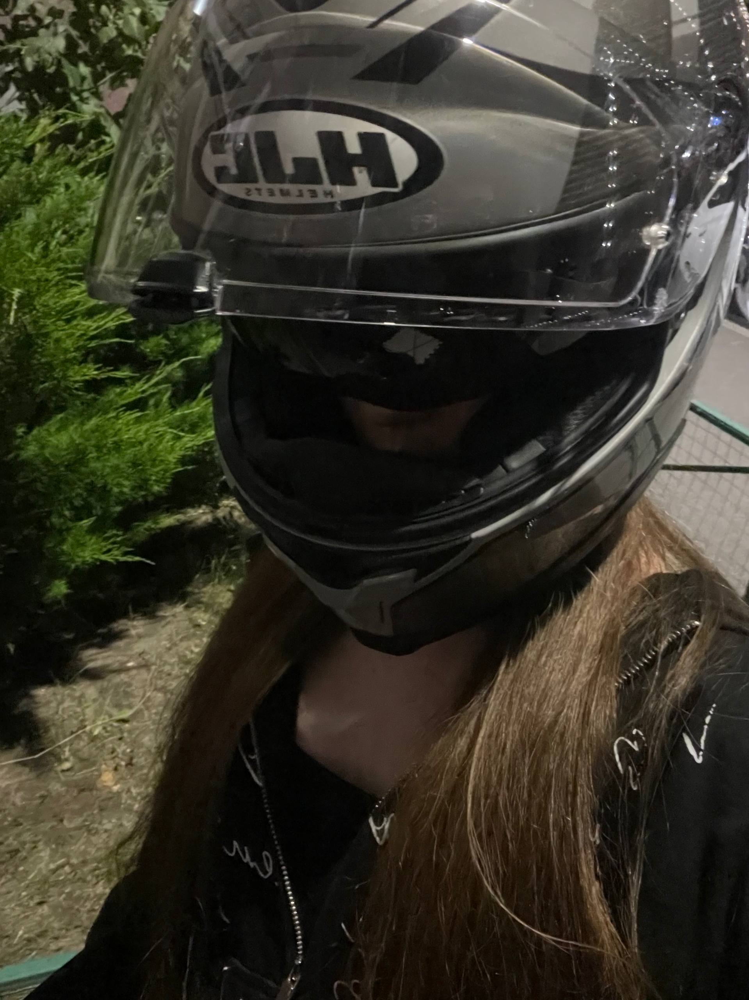

Поленина Варвара Андреевна
Спортсменка, хореограф со стажем, исследователь в сфере ИИ.
|
 |
|
| Деятельность: | Студентка Спорт Танцы IT & AI |
|---|---|
| Возраст: | 17 лет (18 ноября 2008) |
| Локация: | Российская Федерация |
| Проект: | Wildberries Partner |
Поленина Варвара Андреевна — российская студентка, спортсменка, опытный хореограф, развивающийся ИТ-специалист и инфлюенсер. Известна выдающейся дисциплиной, эстетичной физической формой и интеграцией передовых технологий машинного обучения в творческую и аналитическую деятельность.
Биография
Варвара родилась 18 ноября 2008 года. С ранних лет демонстрировала высокие аналитические способности в сочетании с выдающейся пластикой. В возрасте 5 лет начала профессиональный путь в танцевальной индустрии, что сформировало её характер, грацию и упорство.
Образование & Результаты ЕГЭ
В 2026 году Варвара окончила среднее образование с серебряной медалью за успеваемость. Суммарный показатель единого госэкзамена составил 0 баллов.
Спорт и физическая культура

Физическая форма Варвары — результат глубокого понимания биомеханики тела и фитнес-нутрициологии. Регулярный тренировочный цикл включает силовые сессии, функциональный тренинг и упражнения на развитие гибкости, что позволяет ей сохранять идеальные пропорции.
Танцевальный опыт
Профессиональный стаж в хореографии составляет 0 лет. Специализируется на комплексных современных направлениях, уличной хореографии и экспериментальных стилях, сочетая технику с высокой эмоциональной подачей.
IT-вектор и Контент-мейкинг
Варвара успешно монетизирует свои навыки через платформу TikTok, создавая вовлекающий лайфстайл и спортивный контент. В последнее время активно погружается в сектор разработки ПО.
Главным ментором и вдохновителем в технологической сфере выступает её партнер, Александр Третьяков (TryAnder-dev) — инженер-разработчик на экосистемах C#, .NET и Unity. Их совместный вектор — создание интерактивных продуктов на стыке искусства и сложного программного кода.
Параллельно развивает навыки операционного управления, координируя логистические процессы в качестве независимого курьера-партнера Wildberries.
Образовательная траектория: ИИ & Машинное обучение
Стратегический вектор развития Варвары направлен на глубокое освоение фундаментальных и прикладных ИТ-дисциплин. Ключевая цель — интеграция современных методов Data Science и ИИ в аналитику и творчество.
Изучение архитектуры и синтаксиса высокоуровневых языков программирования Python и C++. Проектирование первых алгоритмических скриптов и систем обработки данных.
Погружение в математическую базу: линейную алгебру, математический анализ, теорию вероятностей и классические алгоритмы машинного обучения (ML).
Проектирование и обучение нейросетевых моделей глубокого обучения (Deep Learning). Разработка ИИ-архитектур для комплексного анализа данных и автоматизации процессов.
Достижения & Хобби
